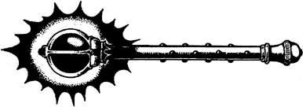

230
‘A toast to our gallant friend,’ cries the soldier with the pock-marked face. ‘Honour in battle!’ shouts the red-haired man to his left. ‘And a rich purse for the victor,’ retorts the other. They laugh heartily and raise the flagons to their lips. Their smiling faces are completely hidden by the jugs as they drink their fill. A full minute of silence passes before the three jugs are slammed to the table, emptied of ale.
The strong beer soon dissolves any guardedness, and they become very talkative about themselves. You take this opportunity to ask them what they know of the Lorestone of Varetta.
‘Legend,’ belches the red-head, ‘myth or legend.’‘Not so,’ interrupts Pock-face. ‘It’s real enough, but it was lost years ago. The Lorestone is magical—it holds a power that can turn an ordinary man into a king.’
{kind=link}

On hearing this, the other soldiers snigger, but Pock-face ignores them and continues. ‘The Lorestone was once set into the throne of Lyris, at the Tower of the King in Varetta. Hundreds of years ago, during the War of the Lorestone, it was stolen by a Salonese prince called Kaskor. He set the stone upon a gold sceptre and used it in battle to inspire his followers. He believed that it made him invulnerable, but it was not so. He was killed in a battle on board his royal barge at Rhem, and the Lorestone was lost when it fell from his hand into the depths of the River Storn. However, that is not the end of the story. There are many tales about the sceptre having been found, but on the whole they have turned out to be fake or merely fanciful. The legend says whoever wields the Lorestone is the rightful ruler of all the Stornlands. For this reason above all others, the Lorestone is sought by many evil or unscrupulous men to further their dreams of power. If you wish to know more, you should go to Varetta. There are many learned men who have devoted their lives to the study of the Lorestone—the scholars and sages of Brass Street—they are the people to help you!’
You thank the soldier for his help and take your leave of the company.
If you now wish to order some food, turn to 172.
If you decide to go to the bar and enquire about a room for the night, turn to 232.